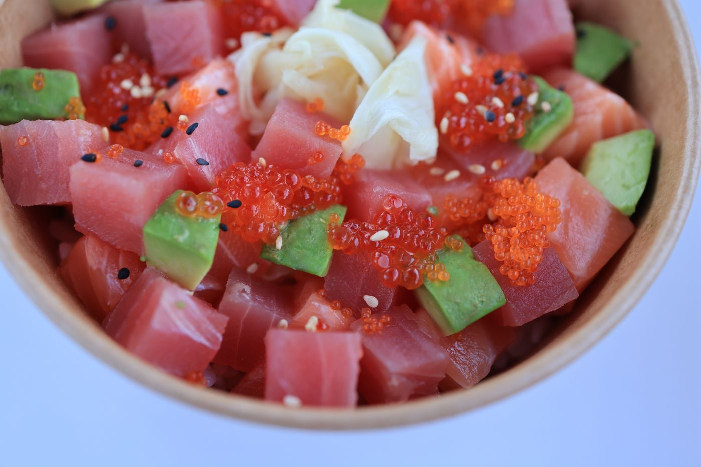
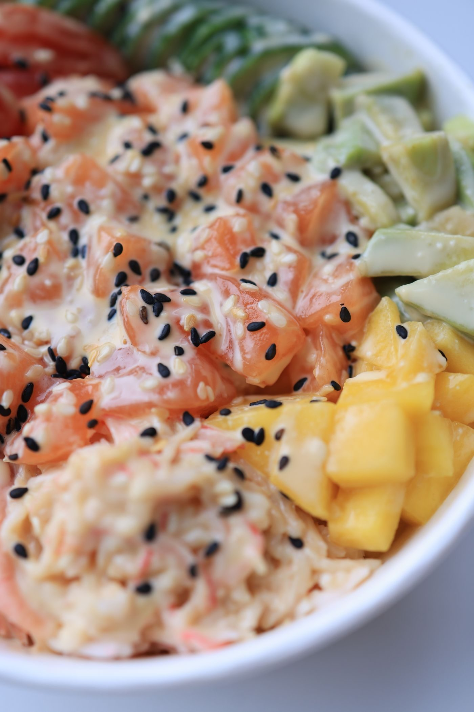

From the menu


A family-run poke and sushi spot in Memphis
Poke Paradise is a family-run poke and sushi restaurant on Summer Avenue. The menu covers poke bowls, sushi burritos, and rolls, plus spicy crawfish nachos, kimchi fries, chicken fried rice, and Spam musubi. Delivery and takeout are available, and there is outdoor seating.

Poke Paradise sits at 6343 Summer Ave Ste 110 in Memphis. It is a family-run poke and sushi restaurant. Delivery and takeout are available, and there is outdoor seating.

6343 Summer Ave Ste 110, Memphis, TN 38134
Open Wednesday through Sunday; closed Monday and Tuesday